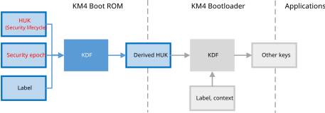

Key Derivation Process
To ensure that application-level keys, credentials, and other secret or sensitive data is uniquely accessible to a specific device when in a specific state, we support unique binding with KDF.
To prevent the re-derivation of previously used keys, only trusted code can access to all of the source material.
{kind=link}

Device binding
In the process of the secret key derivation, HUK will be protected as follows to avoid its leakage:
Different keys are derived from different lifecycles.
Because reading HUK returns full
Fin RMA state, it is unable to read the HUK preset by the customer, which can well protect the data encrypted by the derived temporary secret key from being leaked in the RMA state.When the customer’s derived temporary secret keys are leaked, it means that the data associated with these keys are at risk of being exposed. The customers can update the security epoch to re-derive a new secret key and migrate the data with the new key.
Only KM4 boot ROM can obtain the HUK, and later stages cannot get it.
All other KDF inputs except HUK are known. If HUK is obtained at a certain stage, the whole key derivation process can be replicated, and all temporary secret keys will be exposed.
Sticky Register Bit
Software writes 1 to the sticky register bit before exiting the KM4 boot ROM, to set the HUK unreadable and prevent the HUK from being read in the subsequent boot stages.
The sticky register bit can only be written to 1 but not 0, and will only be cleared to 0 when the system is reset or wakes up from deep-sleep.
Name |
Address |
Length |
Description |
|---|---|---|---|
HUK_PROTECTION |
0x41008230[0] |
1 bit |
HUK protection sticky bit. |
Name |
Address |
Length |
Description |
|---|---|---|---|
HUK_PROTECTION |
0x4100C230[0] |
1 bit |
HUK protection sticky bit. |
Name |
Address |
Length |
Description |
|---|---|---|---|
HUK_PROTECTION |
0x4100C230[0] |
1 bit |
HUK protection sticky bit. |
Name |
Address |
Length |
Description |
|---|---|---|---|
HUK_PROTECTION |
0x42008240[0] |
1 bit |
HUK protection sticky bit. |
KM4 Boot ROM determines whether to enable HUK derivation by the HUK_DERIV_EN (physical 0x369[2]) bit in OTP.
The HUK derivation is disabled by default, and the sticky register bit will not be written when boot, so you can read the key back immediately after programming keys in mass production (MP) to confirm if the programming key is correct. We suggest verifying that the HUK has been programmed correctly, and then programming the
HUK_DERIV_ENbit to0.After re-powering, the HUK derivation is detected enabled, the sticky register bit will be written in the boot ROM stage so that the original HUK cannot be read out after the KM4 boot ROM stage.
HUK OTP
Name |
OTP address |
Length |
Description |
|---|---|---|---|
HUK |
0x310~0x31F |
16 bytes |
Random seed programmed once at device manufacture.
Used for deriving all other secrets and identifiers at the boot stage.
|
HUK_W_Forbidden_EN |
0x364[7] |
1 bit |
When programmed, HUK cannot be modified any more. |
HUK_DERIV_EN |
Physical 0x369[2] |
1 bit |
HUK derivation enable |
How to Use Derivation
The following steps illustrate how to use HUK derivation:
Set
SEC_EPOCHin{SDK}\amebaxxx_gcc_project\manifest.json"IMG_ID": "0", "IMG_VER_MAJOR": 1, "IMG_VER_MINOR": 1, "SEC_EPOCH": 1,
Users can update the security epoch to re-derive a new secret key if needed.
Program HUK-related OTP bits:
Generate a Random seed and program into
OTP 0x310~0x31F:efuse wraw 0x310 10 xxxxxxxxxxxxxxxxxxxxxxxxxxxxxxxx
Users can read the key back immediately after programming keys in mass production (MP) to confirm if the programming key is correct. If the HUK is programmed correctly, the
HUK_DERIV_ENbit will be written to0.Set HUK Derivation enable bit and set
HUK_W_Forbidden_ENto0after HUK check:efuse wraw 0x369 1 xx // enable HUK derivation in rom efuse wraw 0x364 1 xx // HUK cannot be modified anymore after set
Reset the device
Get the DerivedKey
The DerivedKey can only be accessed in trusted code by reading DerivedKey. Users can use their own KDF or function BOOT_ROM_KeyDeriveFunc to derivate keys for application, and all the materials needed by KDF can never be accessed by untrusted code on safety grounds.